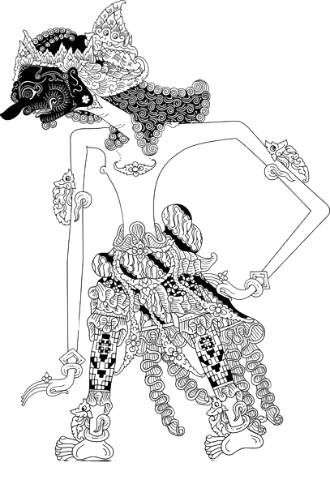
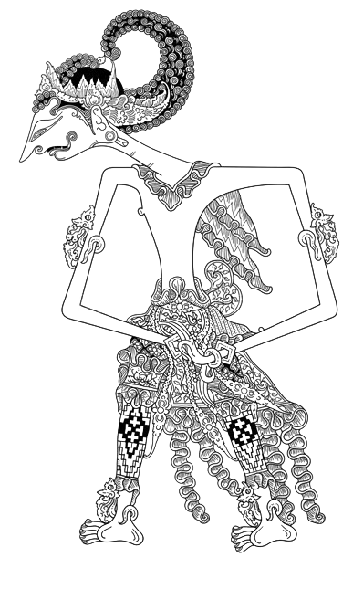
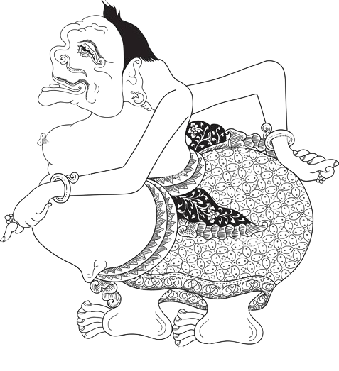
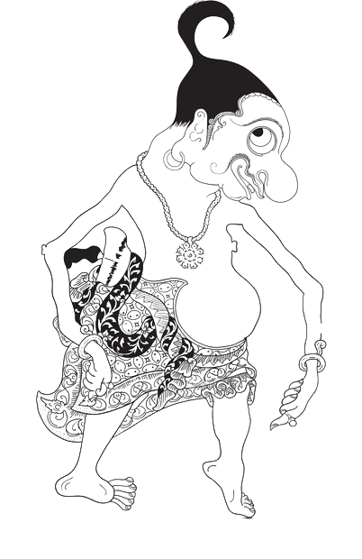
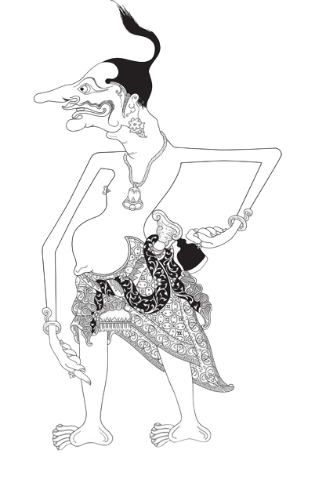
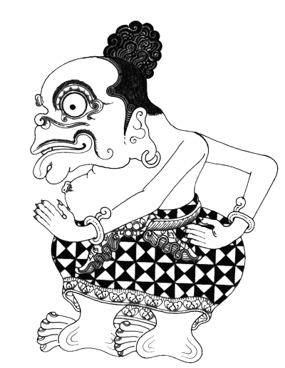

Wayang Antasena

Antasena adalah putra bungsu Werkudara dan Dewi Urangayu. Antasena
digambarkan berwatak polos dan lugu tetapi teguh dalam pendirian.
Antasena dikenal dengan kesaktiannya yang mampu terbang, amblas ke
dalam bumi, serta menyelam di air. Selain itu, kulitnya juga
terlindungi oleh sisik udang yang membuatnya kebal terhadap segala
jenis senjata yang menjadikan Antasena sebagai putra Werkudara yang
paling sakti.
Wayang Wisanggeni

Wisanggeni adalah putra dari Arjuna dan Batari Dresanala. Wisanggeni
digambarkan sebagai pemuda angkuh namun hatinya baik dan suka
menolong. Wisanggeni tidak tinggal di dunia, melainkan berada di
kahyangan Sanghyang Wenang. Wisanggeni dikenal dengan kesaktiannya
yang melebihi putra-putra Pandawa lainnya. Sepupu yang setara
kesaktiannya hanya Antasena saja. Namun bedanya, Wisanggeni bersifat
cerdik dan penuh nakal.
Wayang Punokawan
Punakawan merupakan sebutan umum untuk para pengikut kesatria yang
tidak hanya sekedar abdi, tetapi mereka juga memahami apa yang
sedang menimpa majikan mereka dan sering bertindak sebagai majikan
mereka. Peran punakawan adalah sebagai kelompok penebar humor di
tengah-tengah jalinan cerita.
Wayang Semar

Semar merupakan penjelmaan Ismaya yang mengabdi untuk pertama kali
kepada Resi Manumanasa. Semar merupakan seorang ayah angkat dari
Gareng, Petruk, dan Bagong. Bentuk fisik semar sangat unik dan
seolah-olah ia merupakan simbol penggambaran jagad raya. Tubuhnya
bulat yang merupakan simbol dari bumi. Semar selalu tersenyum
tetapi bermata sembab sebagai simbol suka dan duka. Wajahnya tua
tetapi potongan rambutnya bergaya kuncung seperti anak kecil
sebagai simbil tua dan muda. Ia berkelamin laki-laki tetapi
memiliki payudara seperti perempuan sebagai simbol pria dan
wakita. Ia penjelmaan dewa tetepi hidup sebagai rakyat jelata
sebagai simbol atasan dan bawahan.
Wayang Gareng

Gareng merupakan putra kandung dari seorang pendeta. Gareng
dulunya sangat sakti namun sombong yang kemudian mengalami kutukan
dan terbebas dengan bantuan Semar. Gareng memiliki kaki pincang
yang berarti sifat Gareng sebagai kawula yang selalu hati-hati
dalam bertindak. Selain itu, Gareng juga memiliki tangan yang
patah yang berarti sifat Gareng tidak suka mengambil hak milik
orang lain.
Wayang Petruk

Petruk merupakan putra kandung seorang raja Bangsa Gandharwa.
Petruk gemar bersenda gurau, baik dengan ucapan maupun tingkah
laku dan senang berkelahi. Kemudian ia berkelana untuk menguji
kekuatan dan kesaktiannya dan bertemulah ia dengan Gareng kemudian
berkelahi. Perkelahian ini kemudian dipisahkan dan dinasehati oleh
Semar dan Bagong yang mengiringi Batara Ismaya. Karakteristik dari
Petruk adalah berhidung panjang dan berkulit hitam.
Wayang Bagong

Bagong tercipta dari bayangan Semar berkat sabda sakti Resi
Manumanasa. Bagong dilukiskan dengan ciri-ciri fisik yang
mengundang kelucuan. Tubuhnya bulat, matanya lebar, bibirnya tebal
dan terkesan memble. Gaya bicara Bagong terkesan semaunya sendiri.
Dibandingkan dengan Punokawan lainnya, Bagong adalah sosok yang
paling lugu dan kurang mengerti tata krama. Meskipun demikian,
majikannya tetap bisa memaklumi.